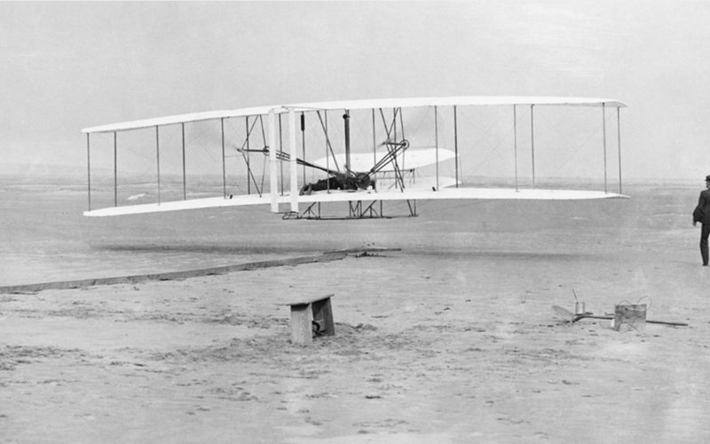
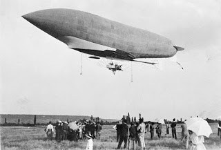
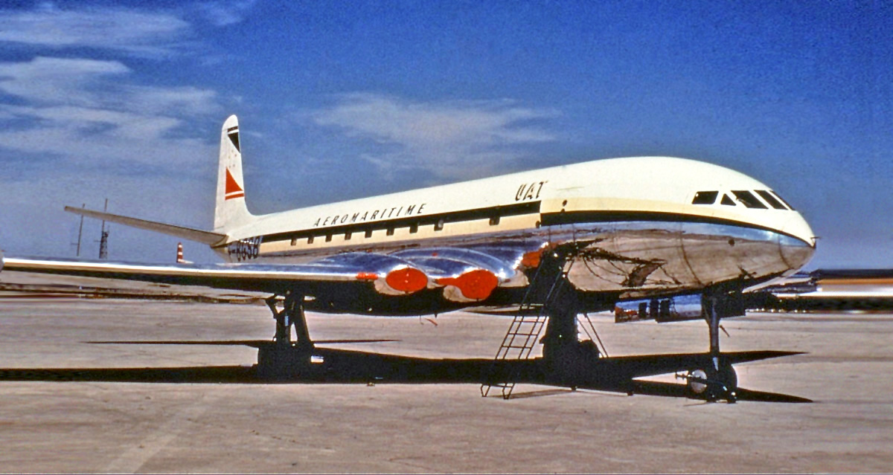
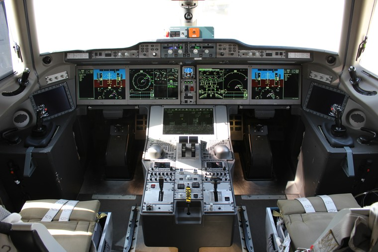

A História da Aviação
O Voo dos Irmãos Wright (1903)

Em 17 de dezembro de 1903, Wilbur e Orville Wright realizaram o primeiro voo motorizado e controlado
da história, em Kitty Hawk, Carolina do Norte.
O voo durou 12 segundos e percorreu 36 metros. Esse marco inaugurou a era da aviação moderna.
A Era dos Grandes Dirigíveis

Nas décadas de 1920 e 1930, os dirigíveis como o Zeppelin dominaram o transporte aéreo de longo
alcance. A tragédia do Hindenburg em 1937, no entanto, marcou o declínio dessas aeronaves em favor
dos aviões de asa fixa.
Aviação Comercial e a Era a Jato

Após a Segunda Guerra Mundial, o desenvolvimento de motores a jato revolucionou o setor. O Boeing
707, introduzido em 1958, tornou as viagens intercontinentais mais rápidas e acessíveis, iniciando a
era dos jatos comerciais.
Inovações do Século XXI

Atualmente, a aviação busca eficiência energética, materiais avançados e sustentabilidade. Projetos
como o Airbus A350, o Boeing 787 e os estudos para motores elétricos e hidrogênio mostram o futuro
do voo.